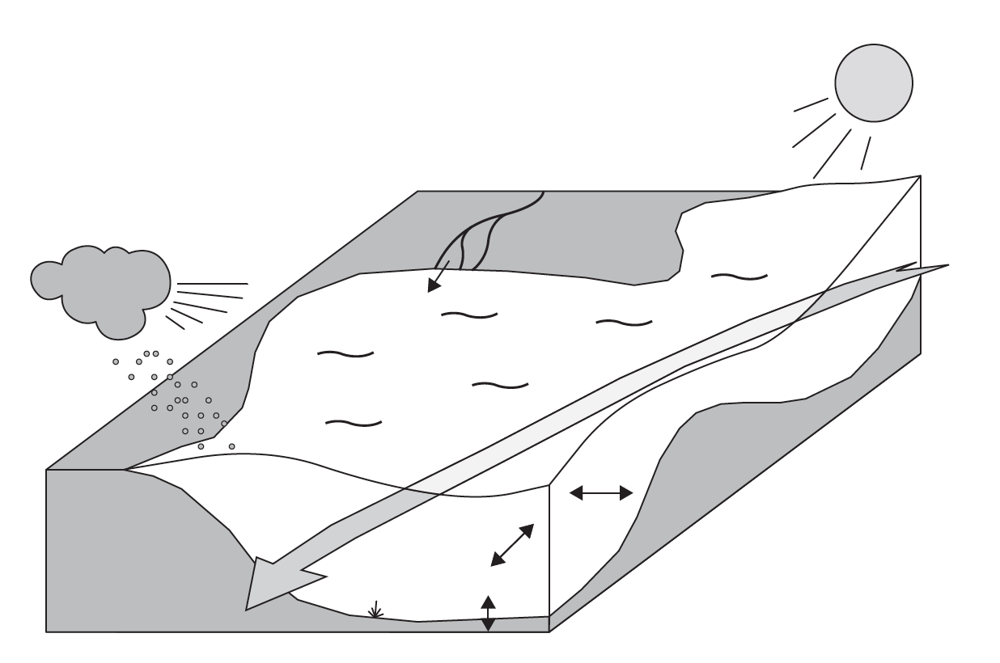

class: center, middle <br/><br/> .title[Dinámica de Fluidos Geofísicos] .subtitle[Clase 09 - Resumen de ecuaciones de movimiento] <br/><br/> .author[Semestre 2022-I] .institution[Facultad de Ciencias] <br/> .date[18 de octubre de 2021] <br/><br/> <img style="width:100%" src="./figures/green_waves.png"> <!-- .note[Created with [{Liminal}](https://github.com/jonathanlilly/liminal) using [{Remark.js}](http://remarkjs.com/) + [{Markdown}](https://github.com/adam-p/markdown-here/wiki/Markdown-Cheatsheet) + [{KaTeX}](https://katex.org)] --> --- name: toc class: left <img style="width:40%" src="./figures/ink.jpg"> #Contenido 1. [Repaso clases pasada](#repaso) 1. [Números adimensionales importantes ](#adim) 1. [Condiciones de frontera](#frontera) 1. [Lista completa de ecuaciones](#ecuaciones) <!-- Comment out the next slide if you don't want the Table of Contents link --> --- layout: true .toc[[✧](#toc)] --- name: repaso class: left ## La clases pasadas: * Obtuvimos un sistema completo de ecuaciones para describir el movimiento de una parcela de fluido en un sistema en rotación (7 ecuaciones, 7 incógnitas). * Simplificamos algunas de las ecuaciones del sistema usando la aproximación de Boussinesq. * Simplificamos aún más las ecuaciones usando argumentos de escalas y magnitudes relativas de los términos en las ecuaciones. --- class: left **1. ¿En qué consiste la aproximación de Boussinesq?** a) En decir que la densidad no depende de la salinidad, ni de la humedad relativa. b) En asumir que la densidad no varía mucho de un valor promedio o de referencia. c) En decir que el término de Coriolis en las ecuaciones de momento es del orden del término del gradiente de presión. d) En decir que las velocidades verticales son mucho más pequeñas que las horizontales. -- **Respuesta: b** --- class: left **2. ¿Cuál de las siguientes es una consecuencia de la aproximación de Boussinesq?** a) No hay propagación de ondas de sonido. b) No hay propagación de ondas de gravedad. c) Los términos con $f*$ son más pequeños que los que tienen $f$. d) Las velocidades verticales son mucho más pequeñas que las horizontales. -- **Respuesta: a** --- class: left **3. La viscosidad efectiva (eddy viscosity)** a) es mayor en la horizontal que en la vertical. b) es la viscosidad dinámica dividida entre la densidad. c) es una aproximación que usamos para incorporar procesos turbulentos que no resuelve el sistema de ecuaciones. d) aparece en los términos difusivos de las ecuaciones de momento. e) a, c, d f) a, b, c, d -- **Respuesta: e** --- class: left **4. Los flujos geofísicos de gran escala tienden a ser:** a) someros ($H<<L$) y 3D ($W$~$U$), b) muy profundos ($H>L$) y 3D ($W$~$U$), c) someros ($H<<L$) y cuasi-2D ($W<<U$), d) muy profundos ($H>L$) y cuasi-2D ($W<<U$) donde $H$, $L$, $W$, $U$ son las escalas características de profundidad, longitud horizontal, velocidad vertical y velocidad horizontal, rspectivamente. -- **Respuesta: c** --- class: left ## Revisemos sus listas de ecuaciones hasta ahora... --- name: adim class: left ## Adimensionalización de ecuaciones Vamos a las notas... --- name: fontera class: left ## Condiciones de frontera Ya tenemos un sistema casi completo. Solo nos falta definir las posibles condiciones de frontera (CF) del sistema para tener soluciones únicas. CF: Condiciones auxiliares que nos dan información acerca del estado inicial del flujo y de sus fronteras geográficas y físicas. .center[ ] .caption[Figura 4.1 de Cushman-Roisin y Beckers, Introduction to Geophysical Fluid Dynamics, 2da ed. Academic Press.] --- class: left ### Condiciones iniciales * En las ecuaciones aparecen derivadas temporales de primer orden de $u$, $v$ y $\rho$ por lo que necesitamos condiciones iniciales de estas variables: *variables de estado*. * Variables que no requieren condición inicial como $w$ y $P$: *variables diagnósticas*. * Si se relaja la aproximacion hidrostática, $w$ se vuelve una variable de estado. * El cálculo de la presión requiere mucho cuidado (superficie libre, aproximación hidrostática, etc). --- class: left ### Condiciones de frontera * El número y tipo de CF requeridas depende del tipo de ecuaciones diferenciales parciales (hiperbólicas, parabólicas o elípticas). * ¡En nuestro caso no podemos definir de una vez qué tipo de ecuaciones tenemos porque cambian con la solución misma! * En el curso elegiremos las CF de acuerdo a argumentos físicos dependiendo de la naturaleza del problema que estemos resolviendo. --- class: left ### Condiciones cinemáticas (más de esto en las notas) * Solo involucran velocidades * Los fluidos no pueden penetrar las fronteras sólidas (impermeabilidad) = la velocidad debe ser tangente a la frontera sólida. * Fondo y paredes (frontera fija) y superficie libre (frontera se mueve con el fluido) * Casos simples: fondo plano y tapa rígida --- class: left ### Ejemplos de condiciones dinámicas (habrá más durante el curso) * Continuidad de la presión en la interfase océano-atmósfera. * Fricción entre fluido y fronteras sólidas (flujo inviscido vs viscoso). * Fronteras abiertas: El dominio de un modelo (numérico) termina cortando a algún sistema natural más grande .center[ <video preload="auto" width="90%" height="auto" data-setup="{}" autoplay loop controls><source src="./videos/w_Bay-NoBay_febTS.mp4" type="video/mp4" /></video>] .caption[Ondas internas generadas por el viento en Bahía Sebastián Vizcaíno, BC, México.] --- name: ecuaciones class: left ## Resumen de ecuaciones Aproximación de Boussinesq + argumentos de escalas + viscosidad efectiva constante: 1. Continuidad: $$\frac{\partial u}{\partial x}+ \frac{\partial v}{\partial y}+ \frac{\partial w}{\partial z}=0$$ 2-4. Momento: $$\frac{Du}{Dt}-fv=-\frac{1}{\rho_0}\frac{\partial p}{\partial x}+A\left(\frac{\partial u}{\partial x}+\frac{\partial u}{\partial y}\right) + \nu_E\frac{\partial u}{\partial z}$$ $$\frac{Dv}{Dt}+fu=-\frac{1}{\rho_0}\frac{\partial p}{\partial y}+A\left(\frac{\partial v}{\partial x}+\frac{\partial v}{\partial y}\right) + \nu_E\frac{\partial v}{\partial z}$$ $$0=-\rho g - \frac{\partial p}{\partial z}$$. --- class: left 5.Energía: $$\frac{D \rho}{Dt} = A\left(\frac{\partial \rho}{\partial x}+\frac{\partial \rho}{\partial y}\right) + \kappa_E\frac{\partial \rho}{\partial z}$$ **Incógnitas**: $u$, $v$, $w$, $p$, $\rho$ ($T$ y $S$ o $Q$ quedan dentro de $\rho$) **Constantes**: Densidad de referencia $\rho_0$ , aceleración de la gravedad $g$. **Cuasi-constantes**: $f = 2\Omega \sin{\varphi}$ (depende de la latitud o puede tomarse como constante si aproximamos un plano alrededor de una latitud). Viscosidades efectivas (eddy) $A$ y $\nu_E$, difusividad efectiva (eddy diffusivity) $\kappa_E$. Para este curso tomamos a $A$, $\nu_E$ y $\kappa_E$ como constantes pero estríctamente pueden ser función del espacio, tiempo o variables de estado. 1-5 se conocen como **ecuaciones primitivas**. --- class: left # Referencias Cushman-Roisin y Beckers, Introduction to Geophysical Fluid Dynamics, Capítulo 4.